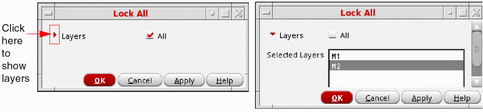
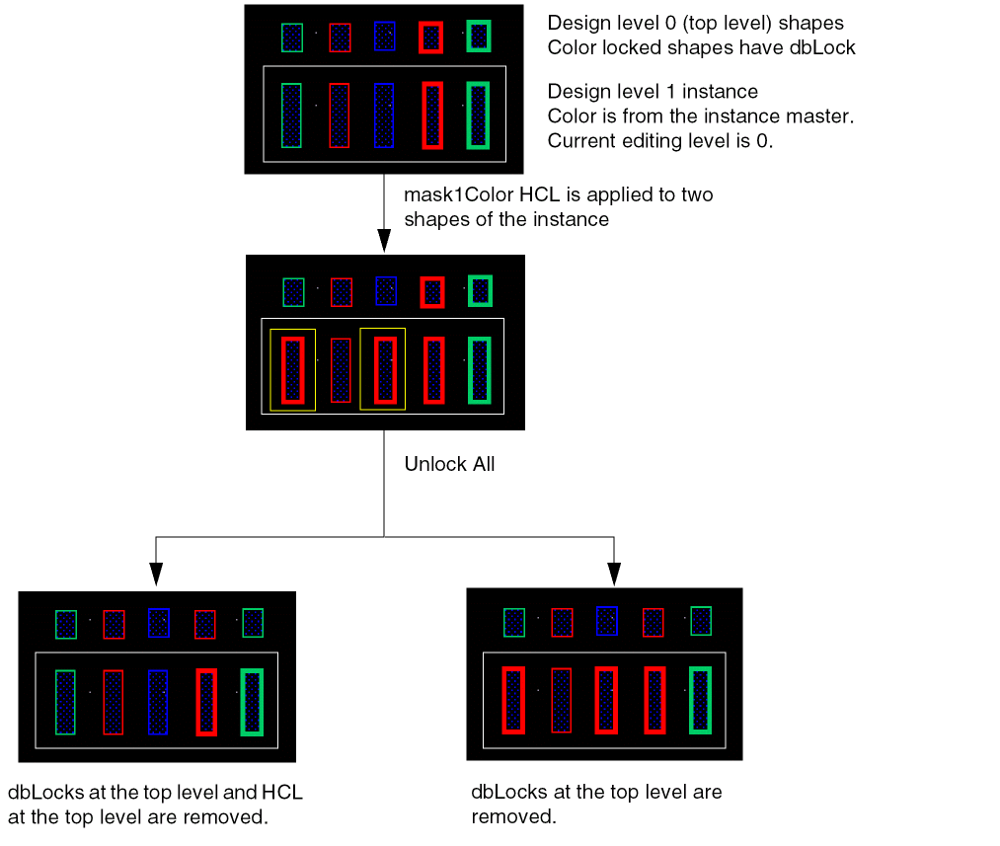

Locking and Unlocking All
You can lock and unlock all colors for all layers or only specified layers.
-
Choose Lock All or Unlock All in the Lock Colors drop-down list of the Multiple Patterning toolbar.
The Lock All or Unlock All form appears.
 - (Optional) To lock or unlock colors only on specific layers:
- Click OK or Apply.
For Lock All, uncolored shapes cannot be locked.
The Lock All option locks all the shapes inside the synchronous clones from the top- level. While locking, the colors are also modified so that all the synchronous clone colors are synchronized.
For Unlock All, top-level shapes with color attribute locks (dbLocks) become unlocked with their current color. Hierarchical color locks (HCLs) at the current editing hierarchy level will be removed.
If Unlock All option is selected, the values specified for the environment variables, lockAllHCLPolicy, enableHCLCreation, and enableHCLCreationOnPcells are ignored and top-level shapes with color attribute locks become unlocked with their current color.
The following example, mask1Color HCL is applied to the first and third shape of the instance, followed by Unlock All.

You can also use the mptLockAll and mptUnlockAll SKILL functions to lock and unlock colored shapes.
Return to top